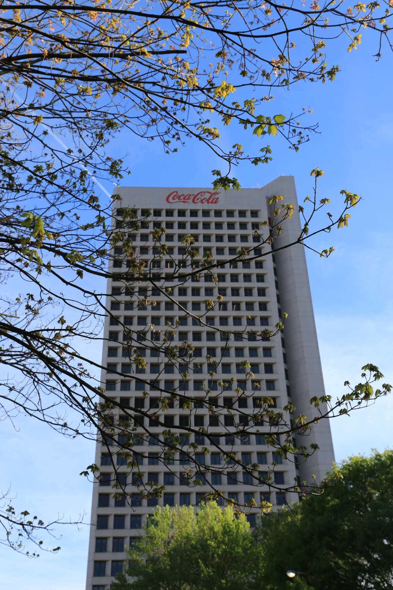
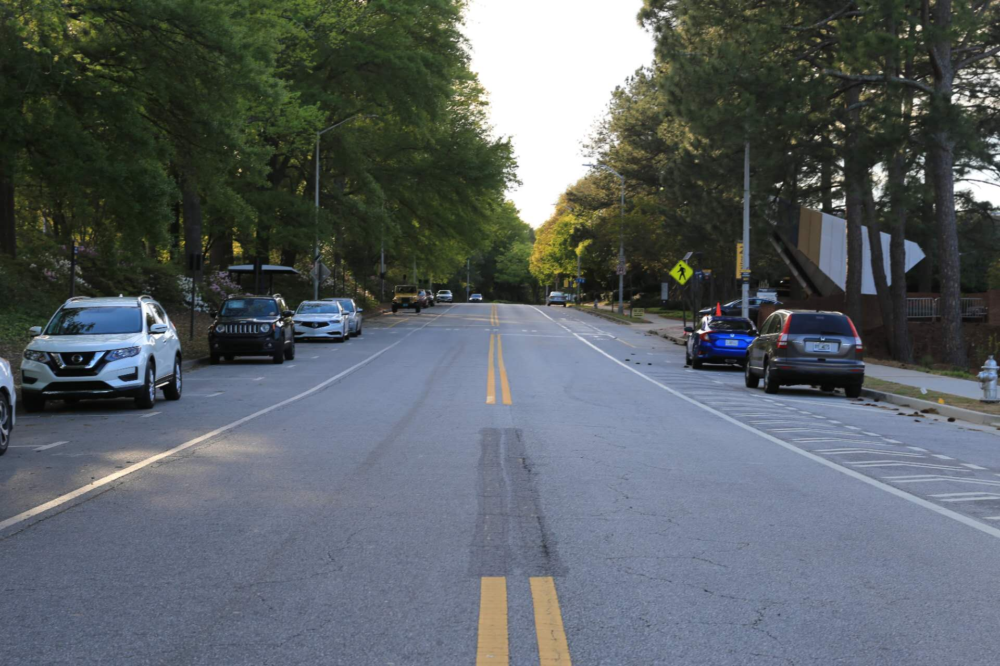
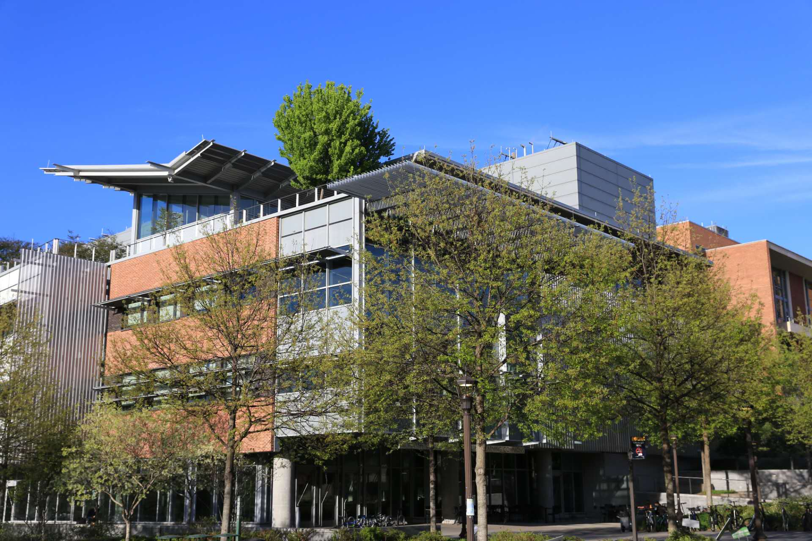
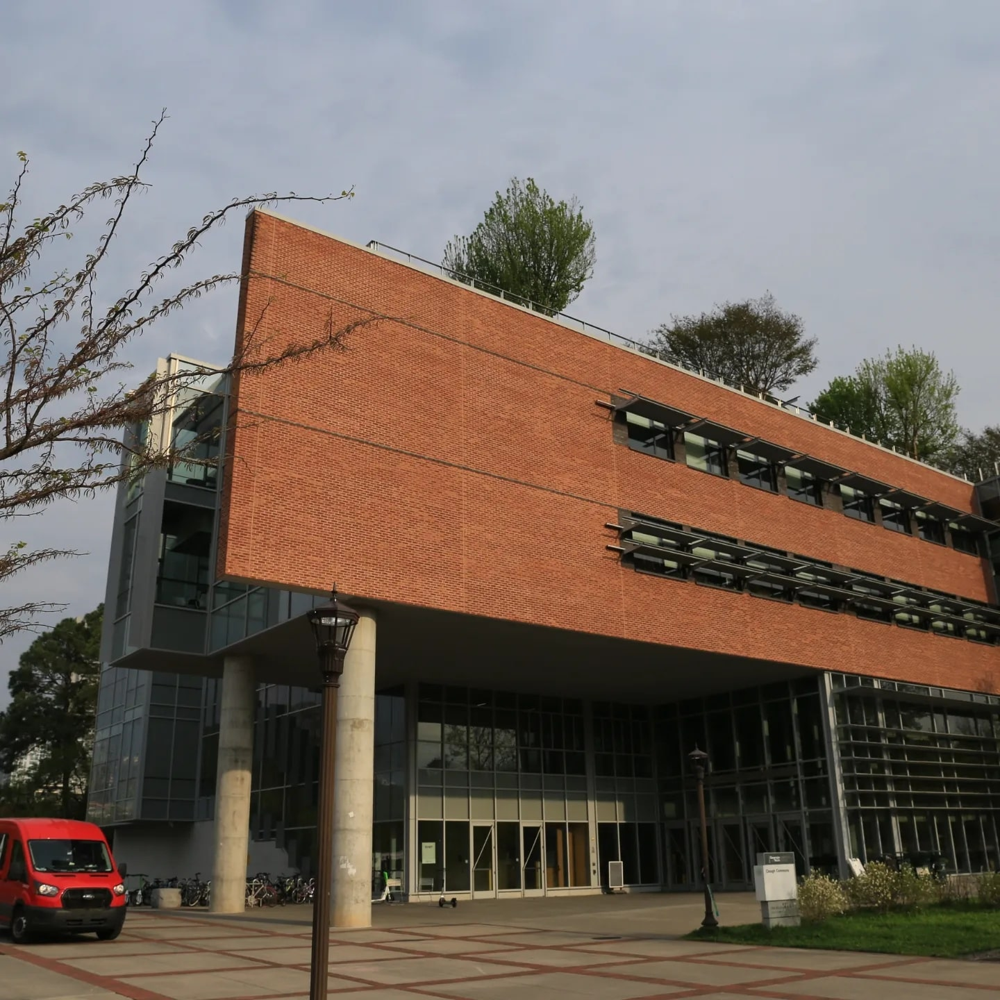
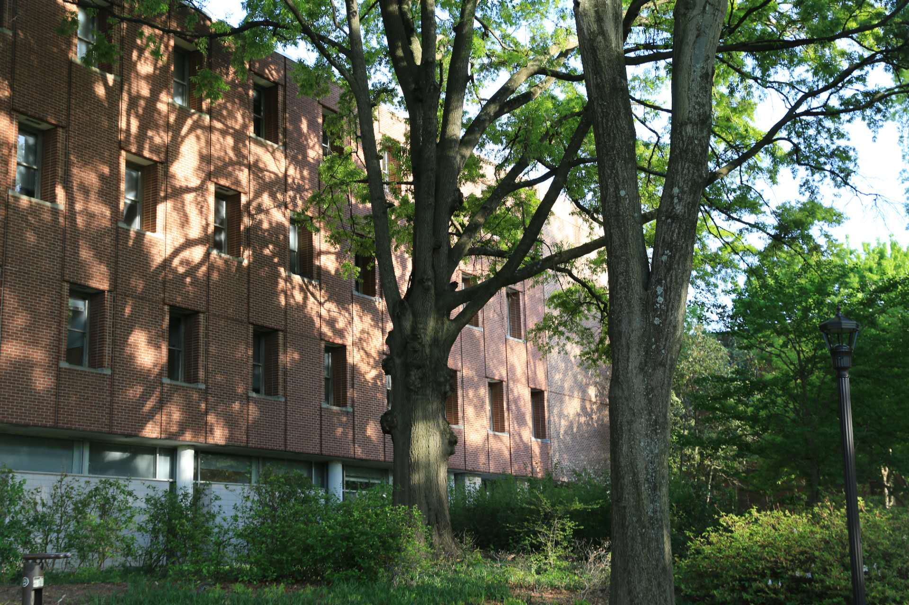

A visual break from equations, grids, and solvers.
I keep some campus and city photos here.
Scenes collected around Atlanta and campus life.
A few favorite images pulled from the existing photo folders and arranged in a cleaner visual layout.

Light across campus
One of the stronger frames from the Georgia Tech collection.

City detail
Urban textures around the Georgia Tech environment.

Open air
A quieter campus frame from the existing folder.

Afternoon color
Bright seasonal contrast and cleaner composition.

Looking up
One I like for the upward perspective.

Campus rhythm
A campus frame I wanted to keep.
Another set of scenes kept lighter and simpler.
The second gallery shifts to a quieter set of campus images and architectural details.

Spring frame
A softer campus detail.

Quiet geometry
Architectural rhythm through a calmer crop.

In-between spaces
One of the more relaxed images from the set.

Sky and structure
A simple frame that still feels distinct.
Daylight detail
Clean color and strong contrast.

End note
A quieter one to end on.